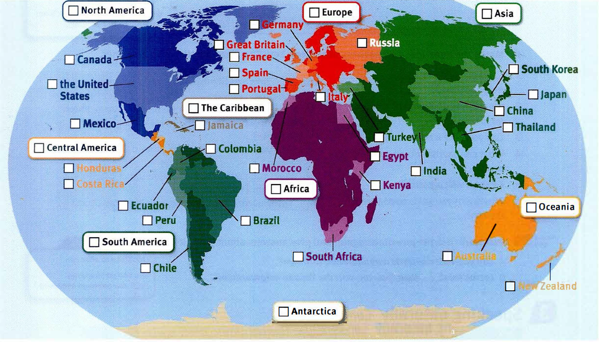
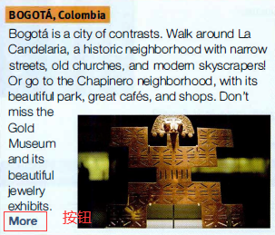
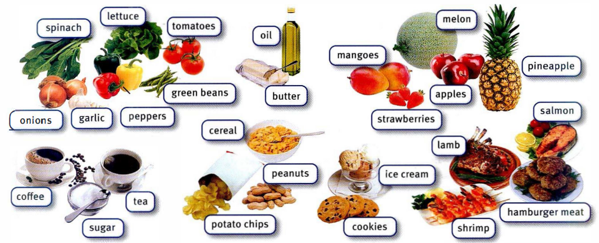

Unit 1 : All about you
Hi, I’m Liz. Liz Kim. My first name is Elizabeth, but everyone calls me Liz.
Hi. My name is Don. My full name is Don Allan Ray Tanner. My nickname is Dart
Hello. I’m Ana Sanchez. My first name is Maria. Ana is my middle name.
Liz Kim is single. >> Ms. Kim or Miss Kim >> Ms 女士(代替 Miss 或 Mrs 的字，不指明称呼人的婚姻状况)
Ana Sanchez is married. >> Ms. Sanchez or Mrs. Sanchez >> Mrs 太太；夫人（用于已婚妇女姓名前的尊称）
Don Tanner is single. >> Mr. Tanner >> abbr. 先生（Mister）
Ana’s husband is married. >> Mr. Sanchez
Alicia Hi. How are you doing? 你还好么？
Adam Pretty good. How about you?
Alicia Good, thanks. It’s a beautiful day.
Adam Yeah, it is. Are you here for the concert?
Alicia Yes. How about you?
Adam Well, yeah, but I’m a student here, too. So are you on vacation?
Alicia Yes, I am. By the way, I’m Alicia.
Adam I’m Adam. Nice to meet you.
Alicia Well, have a nice day. Thanks. You too.
More formal Less formal
Yes. Yeah.
Thank you. Thanks.
Hello. Hi.
How are you? How are you doing?
I’m fine. OK./Pretty good./Good.
Good-bye. Bye/See you/See you later.
Unit 2 : In Class
Asking and say where people are
Miss NelsonWhere’s Hiroki? Is he here today?
AlisonNo, he’s not. Maybe he’s at work.
Miss NelsonOK. How about Ellen?
AlisonI don’t know. I think she’s sick.
Miss NelsonOh. OK. Are Carmen and Suzanna here?
AlisonNo, they’re in the cafeteria.
Miss NelsonThey’re late again. OK. And Nick?
AlisonHe’s over there. I think he’s asleep!
- cafeteria: n. (常设在商店、工厂、学校中的)自助餐或食堂
What’s in your bag? && What’s in the classroom?
- water bottle 水壶，水杯
- cell phone 手机
- wallet 钱包
- laptop 笔记本电脑
- notebook 笔记本
- highlighter 荧光笔
Ask where things art int the classroom
- closet 壁橱
- board 黑板
- calendar 日历
- workbook 练习本 作业本
- wastebasket 废纸篓
- on the wall
- on the floor
- under the chairs
- in the closet
- next to the window
- in front of the board
`Mr. Kern Hello, I’m Mr. Kern.
PaulaHi. I’m Paula. Uh, where’s Ms. Moore?
Mr. KernShe’s sick today.
PaulaOh, no! So is the grammar test today?
Mr. KernYes, it is …. OK, so, this is the teacher’s book, but where are the students’ test papers?
PaulaUh, they’re in Ms. Moore’s desk.
Mr. KernOh, it’s locked. Now, where’s the key?
PaulaI don’t know. Sorry.
Mr. KernOh. Well, no test today then. Oh, wait. It’s right here in my coat pocket.So is the grammar test today？ 这句话很容易看懂，但是让自己说却很难想。会质疑自己，这么说是否符合语法规则
——today 表示时间，grammar test 是一件事，可以直接这么说么？
Ask for help in class
Ming-weiExcuse me, what’s the word for this in English?
SoniaHighlighter.
Ming-weiThanks.
SoniaSure.
Ming-weiUh … how do you spell it?
SoniaI don’t know. Sorry.
Ming-weiThat’s OK. Thanks anyway …. Can I borrow a pen, please?
SoniaSure. Here you go.
Ming-weiThank you. Thank
SoniaYou’re welcome.
Ms.LarsenOK. Open your books to page 4.
Ming-weiExcuse me, can you repeat that, please? What page?
Ms.LarsenSure. Page 4.
Here are some responses to Thank you and I’m sorry:
Thank you.
You’re welcome.
Thanks.
Sure.
I’m sorry.
That’s OK.
I’m sorry. I don’t know.
That’s OK. Thanks anyway
其他表达
- Close your books.
- Listen to the conversation.
- Look at the picture.
- Open your books, and turn to page 9.
- Read the questions aloud.
- Answer the questions. Write the answers in your notebook.
- Find a magazine with pictures of things. Label the pictures. How many words can you label?
Unit 3 : Favorite People (最喜欢的人)
1.Talk about celebrities using my,your,his,her,our and their
ZachWho’s that.
HaleyIt’s Johnny Depp. He’s my favorite actor. He’s so good-looking! His new movie’s great.
ZachHmm … what else is on?
HaleyThere’s a concert. Oh, it’s Adele! I love her new album. Her voice is amazing.
ZachAdele?
HaleyYeah. She’s a famous singer.
ZachOh. Um, how about some sports?
HaleyLook. They’re my favorite tennis players. Their matches are always exciting. You’re a tennis fan, right?
ZachUm, not really. Where’s the remote?
HaleyHere you go.
ZachGreat - a football game. And it’s our favorite team.
HaleyYou mean your favorite team. You know I’m not a football fan.
- favorite actor： 最喜欢的演员 favorite adj.最受喜爱的。没有动词哦
- what else is on: 还有什么节目?
- album: ①n. 唱片专辑 ② n. (收存照片或邮票的) 册子 photo album 相册
- how about: …怎么样 (表示提出建议) How about a cup of coffee? 来杯咖啡怎么样？
- remote: n. 遥控器
- Here you go： 拿着， 给你
2. Describe people’s personalities.
- This is Jenn, a friend from high school. She’s very interesting. She’s in a band!
- This is me with my best friend, Ethan. He’s lazy.
- This is my neighbor and his son. My neighbor is friendly and outgoing, but his son is quiet and shy.
- My math teacher’s very smart. And she’s really nice, too. She’s always fun in class.
DanaSo how’s your new job? Are you busy?
TimYes. It’s hard work, you know. I’m tired.
DanaReally? What are your co-workers like? Are they nice?
TimYes, they are. They’re really friendly.
DanaGreat. And is your boss OK?
TimShe is, yeah. She’s nice. Um … she’s not very strict.
DanaGood, because you’re late for work.
- how’s your new job: 你的新工作怎么样
- What are your co-workers like： 你的同事怎么样
What does your co-workers look like: 你同事长的怎么样
3. Asking information questions about family member
PadmaSo who’s this?
EricaMy grandma. And this is my grandpa. He’s a nice man. He’s seventy-eight now.
PadmaReally? And how old is your grandmother?
EricaShe’s seventy-two.
PadmaShe’s very pretty. What’s her name?
EricaAngela.
PadmaThat’s a nice name. So where are your grandparents from originally?
EricaThey’re from Texas.
- where are your grandparents from originally
= where are your grandparents come from
= 你老家在哪
originally：起初地，这里修饰整个句子
4. Say Really? to show interest or surprise
HugoWhat’s that?
LucyIt’s a painting. I know the artist. She’s a friend of mine.
HugoReally? It’s great. What’s her name?
LucyCarla. I think her work is amazing.
HugoYeah. Where’s she from?
LucyParis originally.
HugoParis? Wow. Is she a professional artist?
LucyYeah. And she’s a singer-songwriter.
HugoA songwriter? Really? What are her songs like?
LucyHere. Listen.
HugoHmm. Interesting. Well, her paintings are good.
- Notice how Hugo shows Interest. He repeats words and asks questions. Find examples in the conversation.
- People say Really? to show they are interested or surprised.
Unit 4 : Everyday life (日常生活)
1.Describe a typical morning use simple present
Greg O'NealWell, I’m pretty busy. I get up early and check my email.
I listen to the radio - I don’t watch TV on weekdays. Then I study.
Jennifer LeeNoisy! I try to study, but my brother and sister make a lot of noise.
They don’t care. My sister watches TV, and my brother plays games on the computer.
Amanda SanchezIt’s crazy. We get up late, so I eat breakfast in the car.
My husband doesn’t have breakfast - he drives.
Alex SternWell, my wife and I read the newspaper.
I have breakfast, and my wife has coffee. We’re pretty quiet. We don’t talk a lot.
- try to do sth: 努力做某事
try doing sth: 尝试做某事
2.Describe weekly routines
- A routine is the usual series of things that you do at a particular time.
- get up early
- go on the Internet
- drive to work
- play games on the computer
- take a class
- do the laundry
- clean the house
- make phone calls (to sb)
- go jogging 慢跑
- play chess 下棋
3.Time expressions
- on Monday(s)
- on (the) weekend(s)
- in the morning(s)
- in the afternoon(s)
- in the evening(s)
- at night
- before breakfast
- after class
- every day
- in the morning: 强调不是在中午，不是在晚上，是在早上
in the mornings: 强调在一个时间段内的每一个早上 - every day：表达频次，程度副词，修饰动词 I study every day.
everyday: 形容词，每天的，日常的。 My everyday exercise.
4.Say well to get more time to think
CeliaHi. I see you here all the time. Do you work out every day?
AndyWell, I come here before class.
CeliaOh, are you a student?
AndyYeah. Well, I’m a part-time law student. And I work at a TV station, too.
CeliaA TV station? Really?
AndyYeah. I’m an intern. So, do you come here every day?
CeliaUh-huh. I run here from home every morning.
AndyOh, so do you live around here?
CeliaNo. I live about 10 miles away.
AndySo you run 10 miles a day? Wow!【Notice】 how Andy and Celia answer questions.
They say more than yes or no.
They want to be friendly.
Find examples in the conversation.
- all the time : 总是
- work out：锻炼，健身房里的锻炼
- intern： 实习生
- Uh-huh： 表示肯定
- Well： Start your answer with Well if you need time to think,or if your answer is not a simple yes or no.
5. Are you like an average American?
Do you work eight hours a day? Then you’re similar to the typical American.
In fact, the average American with a full-time job works just over eight hours a day.
How much time do you spend on the Internet? The average American spends just under two and a half hours a day online.
So do you live your life like the average American? Find out with our quiz.
average
- n.平均数: Take the average of those ratios and multiply by a hundred.
- adj.平均的: The average price of goods rose by just 2.2%(仅上涨了 2.2%).
- adj.普通的: the average American 普通的美国人
live your life : 过着你的生活
- live your life like the average American： 过着像美国人的生活
- Live Your Life Today: 活在当下
- live your life without regret： 没有遗憾地活着
Find out
- find sth out/find out sth 弄清： I was relieved(放心) to find out that my problems were due to a genuine disorder(确是).
- find sb out 识破: Her face was so grave(严肃), I wondered for a moment if she’d found me out.
quiz: cn.测试; 知识竞赛 vt.询问
Do you get up at 6:30 a.m. on weekdays?
Do you sing in the shower?
Do you have cereal with milk for breakfast?
Do you have a pet?
Do you use public transportation every day?
Do you watch television about three hours a day?
Do you exercise every day?
Do you eat at a restaurant three times a week?
Do you sing in the shower? 用 in 表示一般现在时
cereal
- N-MASS： Cereal or breakfast cereal is a food made from grain. It is mixed with milk and eaten for breakfast. 麦片
- N-COUNT： Cereals are plants such as wheat, corn, or rice that produce grain. (小麦、高粱、米等) 谷类植物
So are you like the average American?
If you’re not, that’s OK- it’s fun to compare your life with the lives of people in another country.
If you are, that’s OK too, because the average American is happy!
compare A with： B 把 A 和 B 比较
A be like B： A 像 B
6. 其他表达
sends or receives over 200 text messages a day.
spends over 4 hours a day on the Internet.
Listen to some of Tyler’s statements again.
Are you like Tyler, or are you different?
Check the correct box.
Compare with a partner.Are you like Tyler, or are you different? 这里有一个省略句，为什么省略掉 from。
I’m just like Tyler. I’m different from Tyler.
She also takes a Chinese class On Saturdays.
Unit 5 : Free time（休闲的时间）
1.Ask simple present information question
- What do you do in your free time?
- Who do you go out with?
- When does she go out?
- How often does he eat out?
- Where do they go on Saturday nights? To the movies.
2.How often?
- every day
- On Friday nights. ==> On the Friday night. ==> On every Friday night. 指一般情况下的星期五,某一段时间的星期五
On a Friday night. 表示在某一个晚上 - once a week
- twice a month
- three times a week
3.Say how often you do things.
EricThis soup is delicious. What’s in it? … Mandy? Mandy!
MandyI’m sorry, what?
EricYou know, sometimes I think you watch too much TV.
MandyOh, I hardly ever watch TV.
EricAre you serious?
MandyWell, sometimes I watch the morning shows.And I usually watch the late movie.
EricAnd you always have dinner in front of the TV!I mean, you never talk to me.
MandyYes, I do! I talk to you during the commercials.
Yes, I do: 这里应该翻译为：不，我在和你说话。Yes 是根据实际情况会回答，也就是后面的 I do. 如果后面为 I don’t, 那么前面就需要用 No。
Frequency adverbs - always 100% - usually 90% - often 60%-80% - sometimes 30%-40% - hardly ever <10% - never 0% - never ever 语气比 never 更强烈： never ever stop 不要停；永不停止
4.like or dislike
- I love >> I really like >> I like
- I hate >> I can’t stand >> I don’t like
- Note: When you talk about your general likes and dislikes, use a plural noun
I like cartoons and sitcoms
5.Ask questions in two ways to be clear or not too direct
Stan So what do you do after class? Do you go straight home?
Gabby Well, usually. Sometimes I meet a friend for dinner.
Stan Oh, where do you go? I mean,do you go somewhere nice?
Gabby Do you know Fabio’s? It’s OK. I mean, the food’s good, and it’s cheap,
but the service is terrible. Do you know it?
Stan Well, actually, I work there.I’m a server.
I meet a friend for dinner ： 我约朋友去吃晚餐 (这里是有目的的见面，翻译为约)
to see and talk to someone for the first time （和…）初次見面；（與…）相識
They met at work. 他們是在工作時認識的。
I met her in Hawaii. 我在夏威夷認識了她。to come together with someone intentionally （與…）會面，會合
Lorraine and I meet for lunch once a month. 我和洛倫每月見面一次吃午餐。
We agreed to meet on Tuesday to discuss the project. 我們約定星期二見面討論這個專案計劃。to come together with someone without intending to 遇見，遇到
It’s always awkward when you meet someone you know but you can’t remember their name.
遇到你認識的人但卻記不起他們的名字，總會讓人很尷尬。
Guess who I met in town today. 猜猜今天我在城裡遇到了誰。do you go somewhere nice： 形容词修饰不定代词（somewhere/something）需要放在不定代词后面
6.Say I mean to say more or repeat ideas
You can use I mean to repeat your ideas or to say more about something.
How do you like the restaurants around here? I mean, are they good?
They’re OK. I mean, they’re not cheap, but they’re good.
How do you like sth: 表达对 sth 的好恶/观点
What do you do in your free time? I mean, do you have any free time?
Well, I don’t have a lot. I mean, I have two part-time jobs.
any: 表一些，用在否定句/疑问句中 some：表一些，用子肯定句中
Do you have free time? Do you have any free time? 的区别 。
7.technology addicts
Technology is great. We text and email friends all day long, and we’re always in touch with the office.
Some experts say that a lot of people are now “technology addicts“ - they spend too much time on computers and phones.
So how do you know if you have a problem? Answer these questions.
If you answer yes to all of them, maybe you’re a technology addict.
all day long 和 all day 都是一整天 all day long 是情感/程度 更高
be in touch with =keep in touch with ： 与…保持联系
Technology is great. It helps you keep in touch with people.
we’re always in touch with the office. 我们一直与办公室保持联系。意思是下班还要处理工作上的事情
technology addicts：
- addict：n 有瘾的人 v。使沉溺；使上瘾
- work addict 工作狂
- drug addicts 吸毒者；有毒瘾的人
- net addict 网络上瘾者
- addict to sth 沉溺于
- addictive：adj. 成瘾的, 上瘾的
- addictive drugs 成瘾性药物
- addictive behavior 成瘾行为
- addicted：adj. 入了迷的，上了瘾的
- be addicted to 对…上瘾；沉溺于
how do you know if you have a problem ： 你怎么知道你有没有问题呢？
- What’s the first thing you do in the morning? Do you check your email and text messages?
- Do you ever go out with one friend and then spend time talking to a different friend on your cell phone?
- Do you spend a lot of time on your social network and hardly ever see your friends?
- Do you answer calls or texts in a movie theater?
- How much time do you spend online every day? Is it more than six hours?
What’s the first thing you do in the morning?: you do in the morning 做定语
the first thing is what you do in the morning.
talk to sb
social network : 社交网络，指网上的社交
Technology is very useful, but if you spend all your time on your computer and your cell phone,
that’s not good for you or for your family or friends！
Maybe you need to go on a “technology diet.”
What does that mean? Well, enjoy breakfast with your family.
Use your social networking site, but meet your friends, too, and do something fun together.
Talk to the friend you are with now. So give it a try.
Turn off your phone … just for a minute. Like, right now?
- give it a try : 试一试
- the friend you are with： 和你在一起的朋友
Unit 6 : Neighborhood（休闲的时间）
Neighborhood ① n. a surrounding or nearby region ② n. people living near one another
1. Nice places
How do you like your neighborhood?
People talk about the popular neighborhood called Parkview.
Amy Johnson, 32, medical researcher: Well, Parkview is convenient.
There’s a big supermarket and some nice stores, but there’s no mall. We need a mall!
Paul Johnson, 33, stockbroker : Um, it’s nice. There are two nice outdoor cafés and a couple of movie theaters.
There’s a new swimming pool in the park - we have a beautiful little park. Yeah, it’s good.
Stacy King, 19, college student: Parkview is boring! There’s no place to go.
I mean, there’s no mall, no fast-food places - just a lot of expensive restaurants. Oh, and a small park.
How do you like…?
① used when asking someone how they like their drinks made:
“How do you like your tea?” “Milk and one sugar, please.”
② used when asking someone for an opinion:
How do you like my new shoes?
How is … ?
We use How is … ? to ask about someone’s general health or about the condition or state of something, or how people experience something:
A:How’s your mother these days? (How is her general health?)
B:Oh, she’s fine, thanks.
A:How are the walls in the kitchen? (What is the condition/state of the walls?)
B:Well, they need redecorating really.
What is … like?
We use What is … like? to ask for a description of someone or something (e.g. their appearance, their character, their behaviour):
A:What’s her new house like?
B: It’s a modern one, quite big, with a nice garden.
A: What’s your new teacher like?
B: He’s nice. He’s very good-looking! But he’s quite strict.
If you refer to a couple of people or things, you mean two or approximately two of them, although the exact number is not important or you are not sure of it. 一两个; 几个
I think the trouble will clear up in a couple of days. 我想几天内麻烦就会消除。
Across the street from me there are a couple of police officers standing guard. 我所在的街对面有一两个警察在站岗。
There are no clubs. = There is no club.
People often say There’s before plural nouns, but it is not correct to write this.
There is no clubs.
expensive restaurants.
big apartment buildings.
stadium.
small gym.
clubs.
2. What time is it?
Kyle： Hey Erin, there’s a free concert at the park tonight.
Erin： Really? That sounds like fun.What time does it start?
Kyle： It starts at 7:30.
Erin： Well, let’s go. What time is it now?
Kyle： Um, it’s 5:30. What time do you finish?
Erin： About 6:00. So, let’s meet there about 7:00.
Kyle： Well, they don’t usually have a lot of seats, so …
Erin： Oh, well, in that case, let’s get there early - say, around 6:45?
时间的表达
a.m. = before 12 noon
p.m. = after 12 noon
It’s twelve a.m. = It’s midnight. 凌晨
It’s twelve p.m. = It’s noon. 中午
11:00 : It’s eleven (o’clock).
2:05 ： It’s two-oh-five.（oh 表示 0） It’s five after two. It’s five past two.
10:30: It’s ten-thirty. It’s half past ten.
4:15 It’s four-fifteen. It’s a quarter after four.
6:45 It’s six-forty-five. It’s a quarter to seven.
People say (hour)-fifteen more than a quarter after (hour).
What time do they decide to meet at first.
What time do they decide to meet at last.
What time does the concert start? = What time is the concert？
What time do supermarkets close?
What time do you go out at night?
Let’s get there early. 不等于 Let us get there early.
let’s 有建议的意思
let us 有祈求的意思
in that case
You say in that case or in which case to indicate that what you are going to say is true if the possible situation that has just been mentioned actually exists. 那样的话
Perhaps you’ve some doubts about the attack. In that case it may interest you to know that Miss Woods witnessed it.
或许你对本次袭击有些怀疑。要是那样的话，你可能会有兴趣了解伍兹小姐目睹了一切。
say 怎么理解：say 在这里做插入语，没有实际意义。
I don’t have a lot of money with me. 这里的 with me 强调身上没带钱。如果去掉 with me，就变成了我没有钱。
My parents have some money with me. 我父母有一些钱给我
3 me too !
Omar: What time is it?
Carly: 11:30. Are you hungry? I’m starving.
Omar: Me too. I don’t usually have breakfast in the mornings.
Carly: No, me neither. Do you know any good places to eat around here?
Omar: Well, there’s a new café over there. It looks kind of nice.
Carly: Right. But I bet it’s expensive. Let’s try somewhere else.
Omar: I know. But don’t worry - it’s on me today.
Carly: Oh. Well, in that case, let’s go there!
Me too: 对方是肯定信息，表赞同
me neither： 对方是否定信息，表赞同
Say Right and I know to show you agree with someone or that you are listening.
4 A neighborhood guide
Welcome to Manhattan’s Greenwich Village.
This “artsy” neighborhood has something for everyone. There are outdoor cafés, great theaters, music and comedy clubs, interesting stores, restaurants, and beautiful parks.
Bleecker Street shopping: Window-shopping on this busy street is fun. There are some wonderful stores and unusual boutiques.
It’s a great place to buy books,clothes, and jewelry. Stores are usually open between 11:00 a.m. and 8:00 p.m.
Washington Square Park: There are a lot of free events in this beautiful park - concerts, movies. poetry readings, and more!
It’s also the perfect place to just sit and enjoy some quiet time and maybe play a chess game. It’s open from early morning to 1:00.
Live music in the Village: There’s a great music “vibe“ in the Village with street performers, old record stores, and the Village’s famous jazz clubs, such as Fat Cat and the Blue Note.
For more information about shows, visit the Gotham Jazz website at www.gothamjazz.com.
Art in the Village: The Village is full of art, and it’s not just in the galleries. Check out this storefront covered in keys.
Be sure to go to the Forbes Galleries. The exhibits change throughout the year, and there is always something new to see.
The galleries are open Tuesday through Saturday, and admission is free.
Call the visitor hotline at 1-555-805-4040 for more information about New York City.
Manhattan n.曼哈顿岛（美国的一个区）
Greenwich Village 格林威治村（美国纽约曼哈顿的区，艺术家、作家等的聚居地）
This “artsy” neighborhood has something for everyone. 怎么理解或者翻译。
artsy 有艺术气息的
have sth. to sb. 可以理解为：为 sb 准备 sth
Window-shopping
[N-UNCOUNT]If you do some window shopping, you spend time looking at the merchandise in the windows of stores without intending to buy anything. (无意购买的)橱窗浏览; 随便看看
unusual
1.[ADJ]If something is unusual, it does not happen very often or you do not see it or hear it very often. 不寻常的; 不常见的
They have replanted many areas with rare and unusual plants. 他们在很多地方重新种上了稀有罕见的植物。
2.[ADJ]If you describe someone as unusual, you think that they are interesting and different from other people. 与众不同的
He was an unusual man with great business talents. 他是一个与众不同的人，极具高超的商业才能。
boutique [N-COUNT]A boutique is a small shop that sells fashionable clothes, shoes, or jewelery. 时尚精品小店
jewelry：n. 珠宝，首饰
ruby：红宝石 sapphire: 蓝宝石; diamond: 钻石
copper: 铜（黄铜） bronze: 青铜 jade: 玉
event
1.[N-COUNT]An event is something that happens, especially when it is unusual or important.
You can use events to describe all the things that are happening in a particular situation. (尤指特殊、重大) 事件A new inquiry into the events of the day was opened in 2002.
对那天发生的事件的新一轮调查于 2002 年开始。
2.[N-COUNT]An event is a planned and organized occasion, for example a social gathering or a sports tournament. (有计划、有组织的) 活动
…major sporting events. …重大体育赛事。
Vibes
[N-COUNT]Vibes are the good or bad atmosphere that you sense with a person or in a place. 感应; 气氛
Sorry, Chris, but I have bad vibes about this guy. 对不起，克里斯，但我对这家伙感觉不太好。
There’s a great music “vibe” in the Village with street performers…
句子主干：There’s a great music “vibe” in the Village
with street performers… 是修饰 Village 。这个 Village 具有 street performers…
gallery
[N-COUNT/N-IN-NAMES]A gallery is a place that has permanent exhibitions of works of art in it. (艺术作品的) 陈列室; 美术馆
…an art gallery. …一座美术馆。
storefront A storefront is a small shop or office that opens onto the street and is part of a row of shops or offices. 临街店铺(或办公室)
Check out this storefront covered in keys. 这句话怎么翻译
in keys 点击查看
covered 是修饰 storefront
直译：用 keys（键）去 check out （检查）被 covered 的 this storefront
be sure to 一定；必定；无疑
Be Sure to Remember 请你们一定记住 ; 切记
make sure to do = be sure to do
Unit 7 : Out and about
out and about = go out and talk out。
inside out 了如指掌
ups and downs：[N-PLURAL]alternating periods of good and bad fortune, high and low spirits, etc 起伏; 兴衰
1. away for the weekend
It’s 2:30 p.m. on Saturday, and Anita is at work in San Francisco.
She usually relaxes on Saturdays, but she’s working this weekend.
Right now she’s taking a break and listening to her voice mail.
All her friends are having fun!
San Francisco /sæn frənˈsɪskoʊ/ 旧金山（美国城市）
Anita / əˈniːtə / 安尼塔（女子名）
Saturday, 8:45 a.m.
Hi, Anita. This is Yoko. I’m calling from a ski resort in Lake Tahoe.
Lisa and I are skiing today. It’s so beautiful here, and there’s lots of snow.
It’s snowing right now. I’m sorry you’ re working. What’s the weather like in San Francisco?
Give me a call. Bye.
Lake Tahoe 太浩湖（美国）
Saturday, 10:20 a.m.
Hi, it’s Bill. Listen, Marcos and I are at the beach in Santa Cruz.
Come and join us! Don’t worry - we’re not swimming.
It’s too cold and cloudy. See you.
Santa Cruz 圣克鲁兹（美国加利福尼亚州西部城市）
Saturday, 11:15 a.m.
Hey, Anita. This is Nathan. I’m in San Jose with Katie and Rob.
They’ re playing tennis, and I’m watching. It’s nice and sunny.
I hope it’s not raining there. Call me! Bye.
San Jose 圣何塞（美国加州西部城市）；圣约瑟（哥斯达黎加首都）
课程目标：
Describe the weather
1、体感：hot; cold; cool; dry; wet;
humid: You use humid to describe an atmosphere or climate that is very damp, and usually very hot. 湿热的
warm; bloody cold 太冷了
2、天气（adj）：sunny; rainy; cloudy; windy; snowy; foggy(有雾的); lightning(闪电);
thunder(n.雷; v. 打雷); dog day = hot
Talk about ongoing activities with the present continuous
The sun rises from the east. （习惯，尝试）
The sun is rising form the east. (即时，正在进行)
we’re not swimming.(常用)= we aren’t swimming.（不常用）
2. Sports and exercise
Dad: Hi, Carl. It’s me. How’s it going?
Carl: Oh, hi, Dad. Everything’s great.
Dad: So are you studying for your exams?
Carl: Oh, yeah. I’m working very hard this semester.
Dad: Good. So what are you doing right now? Are you studying
Carl: Uh, Dad, right now I’m watching a baseball game.
Dad: Baseball? … Uh, who’s playing?
Carl: The Yankees and the Red Sox.
Dad: Really? Uh, Carl,… let’s talk again in two hours.
Carl: OK, Dad. Enjoy the game!
Dad: You too. But please try and study for your exams!
How are things? 最近怎么样?
这句话是关心对方目前的各种状况。这句话是关心对方目前的各种状况。
A: How are things? 最近怎么样?
B: Good. I just finished a big marketing project. 不错啊，我刚完成一个大行销专案。
3. How’s it going
Tina: Hey, Ray, this is my friend Kate. She’s visiting from Chicago.
Ray: Oh, hi. Nice to meet you. So, uh … are you here on vacation?
Kate: Yeah, I’m here for a week.
Ray: That’s great! Are you enjoying Laguna Beach?
Kate: Yeah! I’m taking a scuba-diving course.
Ray: That’s cool. How’s it going?
Kate: Really well. And I’m having a great time.
Tina: Oh, that’s my cell phone. Excuse me.
Ray: Sure.
You can use expressions with That’s… to react to news.
That’s good/ great / nice / interesting / cool / wonderful / awesome / fabulous / fantastic / adorable / incredible / excellent
that’s too bad / terrible / sick/ disgusting / gross / disappointing / horrible /
terrible 糟糕的
terrific:极好的
terrifying 让人恐惧的
3. Staying in shape
EXERGAMING Give it a try!
College student Aaron Case plays tennis every day, even when it’s raining - like today.
But Aaron isn’t getting wet. He’s playing against a virtual tennis professional on his TV.
These days, there are millions of “exergamers” like Aaron.
They’re skiing, playing golf, and doing karate in their own homes.
Video exercise games are popular with people of all ages, and it’s easy to see why.
- The weather is never a problem. Is it raining or snowing? Maybe it’s hot and humid outside. Don’t worry. Exercise indoors.
- It’s convenient. Stay home and work out in front of your TV!
- It’s motivating. Don’t pay for an expensive personal trainer. With exergaming, you see yourscores and get feedback on your progress.
- There’s variety. Try something new. Exergames have everything from aerobics to yoga. There are a lot of different types of games, so you never get bored.
- It’s fun. Work out with a friend, or play a game with a family member.
- It’s not expensive. Forget about monthly gym fees. Just buy the basic equipment and a game, and after that, exergaming is free!
So, if you’re looking for convenient, cheap, and fun ways to exercise, why not give exergaming a try?
Unit 8 : Shopping
1. Clothes
What kinds of clothes do you like to wear?
Kyoko Takano, 16, high school student
Well, we don’t have to wear uniforms at our school, so, l like to wear pants, a T-shirt, and sneakers.So yeah, I’m lucky. My friend has to wear a uniform, and she hates it.
Emre Yilmaz, 27, accountant
I have to wear a suit and tie to work. After work, I just want to go home and put on jeans and an old sweater. You know, something comfortable.
Bethany Philips, 32, advertising executive
Well, my boss likes to wear designer clothes, so I need to look good, too. I usually wear a nice skirt or dressy pants with a silk blouse, and a jacket. Oh, and high heels.
sneaker /‘sniːkə/ 运动鞋
designer：个人偏向这里指时尚的
1、A designer is a person whose job is to design things by making drawings of them. 设计师
2、Designer clothes or designer labels are expensive, fashionable clothes made by a famous designer, rather than being made in large quantities in a factory. 名师设计的
He wears designer clothes and drives an antique car. 他穿着名师设计的服装，开着一辆老爷车。
3、You can use designer to describe things that are worn or bought because they are fashionable. 时尚的
She sat up and removed her designer sunglasses. 她坐起来，摘掉她的时尚墨镜。
blouse:女式衬衫
dressy：
Dressy clothes are clothes which you wear when you want to look elegant or formal. 衣着考究的
dressy pants 应该指正式的裤子
silk：n. 丝绸
2.Things to buy
【Salesperson】 Hello. Can I help you?
【Stacy】 Uh, hi. How much are those gloves?
【Salesperson】 These? They’ re really popular. They’re $80.
【Stacy】 Hmm. And what about that blue scarf? How much is that?
【Salesperson】 This scarf is on sale. It’s only $149.
【Stacy】 A hundred and forty-nine dollars? OK, I have to think about it. Thanks anyway.
3. Can I help you
【Clerk】 Can I help you?
【Sarah】 Uh, yes. I’m looking for a bracelet.
【Clerk】 All right. Is it a gift?
【Sarah】 Uh-huh, it’S a birthday present for my sister.
【Clerk】 OK. And um, how much do you want to spend?
【Sarah】 Well, let’s see. .. about $30.
【Clerk】Uh- huh. Well, we have these silver bracelets here.
【Sarah】 Oh, they’re beautiful. Um, how much is this?
【Clerk】 Um, it’s…let’s see …it’s $55.95.
【Sarah】 Oh. That’s a lot. Let me think… Well, it’s perfect for me. 0K. I’ll take it. Now,I need something for my sister!
Uh-huh means“Yes,” “That’s right,” or “ I’m listening. ”
Oh shows you’re surprised, happy, upset, or angry.
4.Shop till you drop
drop: to stop doing or planning something, especially an activity 停止，放棄（尤指某種活動）
I’m going to drop yoga and do aerobics instead.
我準備不再練瑜伽而開始做有氧運動。
Can you drop what you’re doing and help me with this report?
你能停下手裡的工作來幫我寫這份報告嗎？
The Dubai Mail：Shopping, Entertainment, Lifestyle.
If you want to buy a new outfit, you go to a mall. If you want to see sharks in an aquarium or listen to a world-class concert, where do you go? A mall? Well, yes. These days, malls are not just for shopping. They re an important part of our lifestyle.
outfit : a set of clothes worn for a particular occasion or activity
（為特定場合或活動而穿的）全套服裝，裝束I’m going to wear my vampire outfit for Halloween.
萬聖節我要穿我的吸血鬼裝。aquarium /əˈkweə.ri.əm/ 水族馆
【SHOPPING】The Dubai Mall has over a thousand stores**, with** everything from designer clothes to
electronics. Every week, over 750,000 people 一 including top celebrities 一 shop there. There’s also
a souk一 a traditional market with souvenirs, jewelry, and local craft stalls. You need to spend several days there if you want to visit every store.But that’s fine because there’s a 250-room luxury hotel in the mall, too.
top: You can use top to describe the most important or famous people or things in a particular area of work or activity. 最重要的; 最著名的
So you want to be a top model. 如此说来，你想成为一名顶级名模。souk: /suːk/
[N-COUNT]A souk is an outdoor market in a Muslim country, especially in North Africa and the Middle East. (北非和中东穆斯林国家的)露天集市souvenir: /ˌsuːvəˈnɪə/
[N-COUNT]A souvenir is something which you buy or keep to remind you of a holiday, place, or event. 纪念品stall: /stɔːl/
[N-COUNT]A stall is a large table on which you put goods that you want to sell, or information that you want to give people. 货摊; 咨询台
…market stalls selling local fruits. …出售当地水果的市场摊位。craft /krɑːft/
[N-COUNT]A craft is an activity such as weaving, carving, or pottery that involves making things skilfully with your hands. 工艺
…the arts and crafts of the North American Indians. …北美印第安人的美术工艺。250-room 构成形容词。数词-名词 构成形容词，但并不是所有的都可以这么用，要平时积累
【ENTERTAINMENT】 There’s an indoor entertainment park full of virtual reality experiences: safari rides, a snowboard jump, and other exciting games. There’s an aquarium with sharks, and don’t miss the amazing fountains outside - they’re the height of a five-story building.
safari /səˈfɑːrɪ/
[N-COUNT]A safari is a trip to observe or hunt wild animals, especially in East Africa. (尤指在东非的) 游猎
He’d like to go on safari to photograph snakes and tigers.他想去游猎以拍摄蛇和老虎。ride /raɪd/
[N-COUNT]A ride is a trip on a horse or bicycle, or in a vehicle. (骑马、骑车、乘车的) 旅程
She took some friends for a ride in the family car. 她用私家车载了朋友们一程。snowboard 滑雪板
five-story 五层楼高的
【HAVE A GREAT TIME】There are lots of other things to enjoy, too. Eat at one of the 160 restaurants, go and see a movie, a famous band, or piano concert, take a diving course, or just relax.
Unit 9：A Wide World
1. Sightseeing
【Emma】 Oh, no. It’s raining! What can you do in New York on a day like this?
【Ethan】 Oh, come on. You can do a million things. We can take a ferry to the Statue of Liberty.
【Emma】 A ferry - in this weather?
【Ethan】 Well, … we can go to the top of the Empire State Building.
【Emma】 But you can’t see anything in the rain.
【Ethan】 Yeah, you’re right. I know - let’s go to a Broadway show. There are shows on Wednesday afternoons.
【Emma】 OK. It’s a deal. But first can we buy an umbrella?
【Ethan】 Sure we can. Look, there’s a store over there.
You is the most common word before can. You often means “people in general.”
You can’t toke pictures. = It’s not possible to take pictures.come on / ˈkʌm ɒn / 1.[CONVENTION]You say `Come on’ to someone to encourage them to do something they do not want to do. 来吧
Come on Doreen, let’s dance. 来吧，多琳，我们跳舞吧。2.[CONVENTION]You say `Come on’ to someone to encourage them to hurry up. 快点
Come on, darling, we’ll be late. 快点，亲爱的，我们要迟到了。Broadway / ˈbrɔːdweɪ / 百老汇
It’s a deal ： 就这么说定了
can：
to be able to 能，會
Can you drive? 你會開車嗎？
She can speak four languages. 她會講四種語言。to be allowed to （表示許可）可以，能
Can I use your bike, John? 約翰，我能用你的腳踏車嗎？
You can park over there. 你們可以把車停在那邊。used to request something （用於請求）能，可以
If you see Brett, can you tell him I’m in town next weekend?
如果你見到布瑞特，能告訴他我下週末在倫敦嗎？
Can you make a little less noise, please? I’m trying to work.
請你別發出那麼大的聲音好嗎？我正在工作。used to express possibility （表示可能性）可以，能，會
Smoking can cause cancer. 吸煙可能會導致癌症。
Noise can be quite a problem when you’re living in a flat. 住公寓噪音會很成問題。
You can get stamps from the local newsagents. 你可以在當地的報刊經銷店買到郵票。used in polite offers of help （用於禮貌地提出幫忙）可以，能
Can I help you with those bags? 我幫您拿那些提包好嗎？
2. Countries
Jamaica : 牙买加 Honduras 洪都拉斯 Costa Rica ： 哥斯达黎加 Ecuador： 厄瓜多尔
Peru：秘鲁 Chile：智利 Argentina：阿根廷 Portugal：葡萄牙
Vietnam：越南 Singapore：新加坡 Malaysia：马来西亚 Indonesia：印度尼西亚 Philippines：菲律宾
Poland：波兰 Sweden：瑞典 Iceland：冰岛 Norway：挪威 Finland：芬兰 Switzerland：瑞士
Monaco：摩纳哥 Belgium：比利时 Denmark：丹麦
Nepal：尼泊尔 Cambodia 柬埔寨 Laos 老挝 Myanmar：缅甸 Sri Lanka 斯里兰卡
3. They’re a kind of candy
【Server】 Are you ready to order?
【Yuki】 Yes. Can I have a large diet soda?
【Server】 A large diet soda?
【Yuki】 Yes, please.
【Stan】 Um, can I have coffee ice cream with chocolate sprinkles?
【Server】 Sure. OK.
【Yuki】 What are sprinkles?
【Stan】 They’re a kind of candy. You can put them on things like ice cream and cake. They’re kind of like sugar.
【Yuki】 Oh, I know. You can get them in Japan, too.
You can use like to give examples.
like is one of the top 15 words. It has other meanings:
I like Brazilian food.
What’s Thai food like? Spicy?
Sprinkles are like sugar.sprinkles / ˈsprɪŋklz /
sprinkle /ˈsprɪŋkəl/ v. (给…) 洒 (液体); (给…) 撒 (粉末状物)
一般在词尾加-s。s 在浊辅音后面读[z]，在清辅音后面读[s]，在[t]后与[t]一起读[ts]在[d]后与[d]一起读[dz]
kind of 有点… 表示程度
a kind of…：一种…
Speaking naturally -ed endings
/t/ I worked on Saturday.
/d/ We played a game.
/id/ I chatted online.
具体怎么读，需要根据自己的积累
4. Exciting destinations
The Travel Guide
Where can you go for a great city break? Paris? London? New York? Of course! But there are many more amazing cities to see! Click More to find out about these exciting destinations.
Click More : 点击 More 这个按钮
break / breɪk /
[N-COUNT]A break is a short period of time when you have a rest or a change from what you are doing, especially if you are working or if you are in a boring or unpleasant situation. 短暂休息
They may be able to help with childcare so that you can have a break.
他们或许能帮忙看孩子,这样你可以歇歇。
I thought a 15 minute break from his work would do him good.
我认为 15 分钟的工作休息对他会有好处。[N-COUNT]A break is a short holiday. 短假
They are currently taking a short break in Spain. 他们目前在西班牙休短假。
BOGOTA, Colombia
Bogota is a city of contrasts. Walk around La Candelaria, a historic neighborhood with narrow streets, old churches, and modern skyscrapers! Or go to the Chapinero neighborhood**, with** its beautiful park, great cafes, and shops. Don’t miss the Gold Museum and its beautiful jewelry exhibits.
BOGOTA / ˌbəʊɡəˈtɑː /波哥大（哥伦比亚首都）
contrast
名词读 /ˈkɒntræst/
[N-VAR]A contrast is a great difference between two or more things which is clear when you compare them. (巨大的) 差别
…the contrast between town and country. …城乡差别。动词读作 /kənˈtrɑːst/
[V-T]If you contrast one thing with another, you point out or consider the differences between those things. 对比 (事物以指出不同点)
She contrasted the situation then with the present crisis. 她把过去的情况与现在的危机进行了对比。historic /hɪˈstɒrɪk/
important or likely to be important in history 歷史上著名（或重要）的，有歷史意義的
historic buildings 有歷史意義的建築
a historic day/moment 具有歷史意義的日子／時刻with 的用法: 后置定语
MOSCOW, Russia
The Kremlin Palace and the Cathedral of Saint Basil in Red Square are just some of the historic sites you
can see in Russia’s capital. There are also tourist attractions under the city! The Moscow Metro (the subway) is full of art, statues, and crystal chandeliers.
some of …. ： … 中的一些（其中的一些）
Kremlin / ˈkremlɪn /
Palace / ˈpæləs / 宫殿
Cathedral / kəˈθiːdrəl / 大教堂；主教座堂
Saint / seɪnt / 圣人
Basil 英 / ˈbæzl / 美 / ˈbeɪzl /
Square / skweə(r) / 广场
Metro / ˈmetrəʊ / 地铁
statues / sˈtætʃu:z / 雕塑，单数 statue
crystal / ˈkrɪst(ə)l / 水晶
chandelier / ˌʃændəˈlɪə(r) / 吊灯
RIO DE JANEIRO, Brazil
Rio is famous for its beaches, mountains, and natural beauty. Walk through Tijuca National Park, or take
the cable car to the top of Sugar Loaf Mountain for amazing views of the city. Or you can join the locals and head for the beach.
Rio / ˈriːoʊ / 里约
cable / ˈkeɪb(ə)l / 电缆
Sugar / ˈʃʊɡə(r) /
Loaf / ləʊf /
head
to go in a particular direction 朝某特定方向行進
I was heading out of the room when she called me back. 她叫我回來的時候我正往屋外走。
We were heading towards Kumasi when our truck broke down. 我們在前往庫馬西的途中卡車拋錨了。
He headed straight for (= went towards) the fridge. 他逕直朝冰箱走去。
I think we ought to head back/home (= return to where we started) now, before it gets too dark. 我想我們應該在天黑之前回去／家。
BEIJING, China
In Beijing, you can experience the old and the new. Take a tour of the Forbidden City with its 600-year-old palaces. Then visit the modern Olympic “bird’s nest” stadium [Beijing National Stadium]. End the day with a traditional foot massage.
massage / ˈmæsɑːʒ / n/v 按摩 foot massage 脚底按摩
Writing An on line travel guide
Bangkok, Thailand is famous for its palaces, temples, and beautiful river. Visit the beautiful Grand Palace. Walk around the historic temples, the quiet gardens, and the museum. Then you can take a boat trip on the
river and enjoy the sunset.
Bangkok / ˈbæŋkɒk / 曼谷（泰国首都）
Grand Palace / ɡrænd ˈpæləs / 大皇宫
英文中地址如何表示：从小到大
Unit 10：Busy lives
1. A night at home
What did you do last night?
I tried to study for a math exam while my roommate practiced her flute. –Mari
Well, my wife rented a movie, So we watched that. But I didn’t like it much. – Peter
Let me think. I stayed home, played a video game with some friends, and listened to music. That’s it. – Josh
I chatted online with my friend Jay. He’s living in Italy. – Stephen
I just worked late and then cleaned the house. You know – the usual. – Rachel
I didn’t want to go out, So I invited a couple of friends over, and we cooked dinner. - Melissa
flute / fluːt / 长笛
That’s it. 就那样了
2. A busy week
I bought a sweater.
I had a piano lesson.
I made a lot of phone calls.
I saw three movies.
I read a couple of books.
I went to a party.
I took an exam and got an A.
I met someone interesting.
I did a lot of work.
I wrote three reports.
3. Congratulations!
【Mark】 Thank goodness it’s Friday.
【Eve】 Yeah. I’m exhausted.
【Mark】 Me too.I had a cold all week.
【Eve】 You did? I’m sorry to hear that.
【Selina】 So how did your interview at the hospital go?
【Adam】 Great! I got the job.
【Selina】 You did? Thank goodness! I know you really wanted it.
【Adam】 Yeah. I start on Monday.
【Selina】 That’s great. Congratulations!
【Celia】 Hey - happy birthday! Did you have a nice day?
【Hugo】 Yeah. Thanks. I went out for lunch with some friends.
【Celia】 You did? Nice.
【Olivia】 Did you take your driver’s test yesterday?
【Jake】 Yeah. I failed.
【Olivia】 Oh, you did? I’m sorry to hear that.
【Jake】 I can take it again next month, though.
【Olivia】 Yeah? Well, good luck!
You can say You did? to show that you’re interested or surprised, or just that you’re listening.
though /ðəʊ/
1.[CONJ]You use though to introduce a statement in a subordinate clause which contrasts with the statement in the main clause. You often use though to introduce a fact which you regard as less important than the fact in the main clause. 尽管
Everything I told them was correct, though I forgot a few things. 我告诉他们的全部正确，尽管我忘了几件事。
I like him. Though he makes me angry sometimes. 我喜欢他，尽管他有时惹我生气。2.[CONJ]You use though to introduce a subordinate clause which gives some information that is relevant to the main clause and weakens the force of what it is saying. 不过
He did reply, though not immediately.他确实回复了，不过不是立马回复。
4. A blog
SHE SAID YES ! ! ! SATURDAY, APRIL 28
What a crazy week! I forgot Sophie’s birthday. I got a new job. Oh, and I almost didn’t ask Sophie to
marry me!
I bought a ring for Sophie on Saturday morning - I wanted to ask her to marry me that night. So I invited her over, cooked a special dinner, and made her favorite dessert. I felt nervous, but when she arrived, she said she had a cold and felt tired. Not the right mood for “Marry me.” She went straight home after dinner. She didn’t even eat my chocolate cake!
I had an important interview on Wednesday - I didn’t get Sophie’s cold, thank goodness - and I got the
job! When I texted Sophie the good news, she texted back, “Let’s have dinner on Friday to celebrate!”
Perfect, right? Wrong. We went to our favorite restaurant. Before the server showed us to our table, Sophie saw some friends, and we all ate together. I didn’t want to ask her in front of all our friends.
After we left the restaurant, Sophie borrowed my jacket. (Oh, no! The ring!) She put her hands in the
pockets and found the box!
“Oh, you remembered my birthday!” she said. (Oh, no! Her birthday!) Then she opened the box.
Thinking fast, I dropped to one knee. “Happy birthday, Sophie! Will you marry me?”
POSTED BY MARTIN EMORY AT 11:11 AM
drop to one knee 单膝下跪。 是固定表达
get on one’s knee
5. COMMENTS
April 28, 4:42 PM Bill Sanders said . ..
Nice save, Martin. Your post is hilarious! Also, congratulations! You guys are great!
April 28, 5:21 PM Mike said. . .
Good luck to both of you! And happy birthday to Sophie! Call me sometime and let’s talk.
April 28, 6:47 PM Sophie said ..。
You’re so sweet, Martin. Don’t worry - you don’t need to buy me a birthday present. I love you.
Nice save : 可能是 well done 的意思
hilarious / hɪˈleəriəs /
extremely funny and causing a lot of laughter 非常滑稽的，引人发笑的
He didn’t like the film at all - I thought it was hilarious.
他根本就不喜欢这部电影——可我觉得它好笑极了。sweet
- (especially of food or drink) having a taste similar to that of sugar; not bitter or salty （尤指食物或饮料）甜的
- If an emotion or event is sweet, it is very pleasant and satisfying. 愉快的，惬意的，令人满意的
She was enjoying the sweet smell of success. 她沉浸在成功的喜悦中。- If a sound is sweet, it is pleasant and easy to like. （声音）甜美的，悦耳的，动听的
- (especially of something or someone small) pleasant and attractive （尤指小东西或小孩子）迷人的，漂亮的，吸引人的
- kind and pleasant 温和的，和蔼的，讨人喜欢的
A “Thank Goodness It’s Friday” Party
Last Friday, I met a friend for coffee after work. We usually go out on Fridays, but we wanted to do something different. We felt exhausted, and we wanted to relax a little! Before we left the coffee shop, we
called four friends. We invited them to my apartment for a little party.Then we stopped at a supermarket and bought some sodas and three big pizzas. When our friends arrived, we just sat and talked for hours. And we ate all three pizzas! We had a really great time!
for + 时间段 ： “for” 加上时间点表示持续的时间长度，常用于描述一个事件、行动或状态发生的时间跨度
Unit 11：Looking back
look back
to think about something that happened in the past
When I look back I can see where we went wrong. 回過頭來看，我可以看出我們錯在哪裡。
It wasn’t such a bad experience when I look back on it. 現在回想起來，我覺得那並不是一段特別糟糕的經歷。
1. My first …
The College Post
What do you remember?
We interviewed two students about some “firsts’ in their lives.
Ryan Wong
【The College Post】: Do you remember your first teacher?
【Ryan Wong】: Kind of. I remember her name was Ms. Johnson and that we were all scared of her.
【The College Post】: Was she strict?
【Ryan Wong】: Yeah, she was very strict. It was awful! I was so unhappy that year - I was only five. The other kids weren’t too happy either. We were all very quiet in her class.
Melissa King
【The College Post】: Do you remember your first job?
【Melissa King】: Yeah. I had a part-time job in a restaurant. I was a server. I was young - only 16. I remember that on my first day things were really busy, and I was very nervous. I made a lot of embarrassing mistakes, and my boss wasn’t too pleased.
【The College Post】: What about the customers? Were they nice?
【Melissa King】: Yes, they were - I guess because I was new.
pleased / pliːzd /
I guess 在这里应该是做插入语
2. Vacations
【Diana】 Great picture! When did you get back?
【Jason】 Last night.
【Diana】 So how was your vacation?
【Jason】 Oh, it was wonderful.
【Diana】 Where did you go exactly?
【Jason】 We went to Hawaii.
【Diana】 Wow! What was the weather like?
【Jason】 It was hot, but not too hot.
【Diana】 Nice. So what did you do there?
【Jason】 We went to the beach every day, and I went parasailing. I didn’t want to come home.
【Diana】 Well, I’m glad you did…. I have a ton of work for you!
parasailing 帆伞运动
ton / tʌn / 吨 a ton of 许多
I’m glad you did
这里的 you did 是一个省略，代替前面所说的事情
“I went hiking with a friend in Peru, and we got lost. We got really scared when it got dark.”
“I got a new camera from my mom for my trip to Africa.”
“I got sick on our honeymoon, right after we got married.”
“I went on a trip across Canada with a friend. It was awful. We didn’t get along.”
“I went to see a band in Miami. I met the lead singer, and I got his autograph.“
“I went snorkeling in Thailand. It was great, but I got a bad sunburn.”
Peru / pəˈruː / 秘鲁
honeymoon / ˈhʌnimuːn / 蜜月
get sick 生病
right [adv] exactly or all the way 正好，恰好；一直，徑直
right after… 正好在…之后along / əˈlɒŋ /
1.[PREP]If you move or look along something such as a road, you move or look toward one end of it. 沿着
Pedro walked along the street alone. 佩德罗独自一人沿着这条街走。 2.[ADV]If you take someone or something along when you go somewhere, you take them with you. 一起地 (相当于 with)
This is open to women of all ages, so bring along your friends and colleagues.
这对所有年龄的妇女开放，所以带你的朋友和同事一起来。 3.[PHRASE]You use along with to mention someone or something else that is also involved in an action or situation. 同…一起 (相当于 with)
The baby’s mother escaped from the fire along with two other children.
这个婴儿的母亲和其他两个孩子一起从火里逃了出来。get along
1.If two or more people get along, they like each other and are friendly to each other. 相處融洽；和睦相處
I don’t really get along with my sister’s husband. 我和我姐夫不太合得來。
2.to deal with a situation, usually successfully （通常指成功地）對付，應付
I wonder how Michael is getting along in his new job? 我不知道麥克的新工作做得如何。autograph / ˈɔːtəɡrɑːf / n. (名人的) 签名 vt. 在…签名
snorkel / ˈsnɔːkl / [N-COUNT] (潜水者用的) 呼吸管 [V-I] 使用呼吸管潜泳
go snorkeling: 浮潜（用管子）go diving 潜水 （氧气筒）
sunburn 晒伤
3. Anyway, what did you do?
【Tom】 So, how was your weekend, Jessica?
【Jessica】 Great! Gina and I went biking out in the country.
【Tom】 Oh, really?
【Jessica】 Yeah, it was fun, but there were lots of hills. I was exhausted by the end of the day.
【Tom】 Yeah, I bet.
【Jessica】 So… anyway, what did you do?
【Tom】 Oh,I had a party Saturday. It was good.
【Jessica】Really? Nice.
【Tom】 Well, anyway,.. . I have to go. I have a meeting now. See you later.
You can use Anyway to change the topic of a conversation.
You can also use Anyway to end a conversation.go biking out
I went biking out in the country. 这里的 out 强调了从室内到室外的状态，也可以不要这个 out，这个句子也成立I bet : said to show that you understand why someone has a particular opinion or feels a particular way（表示理解）有同感，我相信
4. A funny thing happened …
Our community: This week 一 funny stories from our readers
How embarrassing!
By Sarah Morgan
A funny thing happened to me yesterday after work. I was really hungry and I didn’t feel like making dinner, so I went to a fast food place near my office building. I got a cheeseburger, some fries, and a soda. The restaurant was really crowded, so I had to share a table. I sat down with my tray across from a young
guy. I said,“Hi. Is this seat free?” He nodded and smiled, but he didn’t say anything. He seemed pretty nice.
Anyway, I got out a magazine and started eating my burger. It was a really interesting article and I couldn’t stop reading. But then I saw the guy take one of my fries! I couldn’t believe it, but I was too embarrassed to say anything. Then he took another one, and I still didn’t say anything!
Then I thought, “Those are my fries.” So I took a handful and ate them. The guy looked at me in a funny way, but he didn’t say anything. Then he did it again and ate another one of my fries! It was really strange.
Finally, a few minutes later, he got up, took his tray, and left. That’s when I realized the fries were on his
tray! And my fries? They were under my magazine. How embarrassing! I ran out into the street. There was the guy.
Continued on next page …
community / kəˈmjuːnəti /
the people living in one particular area or people who are considered as a unit because of their common interests, social group, or nationality 社區；群體；社團，團體handful / ˈhændfʊl / 1.[N-SING]A handful of people or things is a small number of them. 少数
He surveyed the handful of customers at the bar. 他打量着吧台边仅有的几位顾客。 2.[N-COUNT]A handful of something is the amount of it that you can hold in your hand. 一把
She scooped up a handful of sand and let it trickle through her fingers.
她抓了一把沙子，然后让它们从指缝间慢慢漏掉。 3.[N-SING]If you say that someone, especially a child, is a handful, you mean that they are difficult to control. 难管的人 (尤指小孩)
Zara can be a handful sometimes. 扎拉有时会很难管教。That’s when > That’s when I realized the fries were on his tray! 这里的 when 引导的是表语从句
这里的 That’s when = that was when
类似的还有
The book is not what I need.
That is why she failed to pass the exam.
Continued from previous page. ..
I said,”Hi. We met a few minutes ago.”
He said, “yeah, we did.”
I said, “I think I ate your fries.”
He laughed and said, “yes, you did.”
I apologized and said, “I thought they were my fries.”
He said, “that’s OK. No problem.”
I said, “can I buy some more fries for you.”
He laughed and said, “thank you I’m still a little hungry.”
Unit 12：Fabulous food
fabulous /ˈfæbjʊləs/
If you describe something as fabulous, you are emphasizing that you like it a lot or think that it is very good. 极好的
This is a fabulous album. It’s fresh, varied, fun. 这是个极好的专辑。它是新颖的、多样的、有趣的。
1. Eating habits
Voice-mail greeting: We ‘re not home right now. Please leave a message.
Hi, Mom and Dad! I need some help fast! I invited some friends for dinner tonight, and I don’t know what to cook.
Amy’s a vegetarian, So she doesn’t eat meat, fish, cheese, or eggs. I guess she just eats a lot of fruits and vegetables, and maybe rice.
Juan’s on a diet. He can’t eat much rice, bread, or pasta. But he eats a lot of meat, cheese, eggs, and vegetables, like carrots and cucumbers.
And David is picky- I mean, he doesn’t eat many vegetables. And he’s allergic to milk and shellfish. But he likes potatoes. Oh, and bananas. Please call me! Bye.
vegetarian / ˌvedʒəˈteəriən /
pasta / ˈpæstə / 意面
cucumber / ˈkjuːkʌmbə(r) / 黄瓜
picky / ˈpɪki / 爱挑剔的; 过分讲究的
allergic / əˈlɜːdʒɪk / 过敏的 be ~ to sth ：对 sth 过敏
shellfish / ˈʃelfɪʃ / 甲壳类水生动物
2. What’s for dinner?
broccoli 花菜 eggplant 茄子 mushroom 蘑菇 corn 玉米 pear 梨 grape 水果
peach 桃子 plum 李子 cherry 车厘子 durian 榴莲 passion fruit 百香果
【Ted】 I guess it’s my turn to cook dinner. So what would you like?
【Phil】 Um, I’d like some chicken. Do we have any?
【Ted】 Um, no, we need to get some. We don’t have any vegetables, either. Would you like to go out for pizza?
【Phil】 Again? No, I think I’d like to stay home tonight.
【Ted】 OK. Then we have to go to the grocery store.
【Phil】 Well, I went grocery shopping last week. I think it’s your turn.
3. I just want a sandwich or something.
【Carrie】Let’s take a break for lunch.
【Henry】 Sure. Would you like to go out or… ?
【Carrie】 Well, I just want a sandwich or something.
【Henry】 OK. I don’t I want a big meal or anything, either. But I’d like something hot.
【Carrie】 Well, there’s a new Spanish place near here, and they have good soup.
【Henry】 That sounds good.
【Carrie】 OK. And I can have a sandwich or a salad or something like that.
【Henry】 Great. So let’s go there.
Notice how Carrie and Henry use or something (like that) and or anything. They don’t need to give a long list of things.
You can use or … ? at the end of yes-no questions to make them less direct.
4. Great places to eat
Restaurant Guide: Try something different!
We searched the world and found these unusual places to eat.
Chillout ice restaurant, Dubai
Would you like to visit a really cool restaurant? Then try this place. Everything is made of ice, from the tables and chairs to the pictures on the walls. When you order a soda, it comes in an ice glass. and
your meal is served on an ice plate. Luckily, if you get too cold, you can ask for a warm blanket and some hot chocolate. Be sure to try some ice cream, too. It never melts!
chill out 放松 Chillout 可能是放松的
blanket 毯子（用来盖的） carpet 地毯
melt [vi/vt] （使）融化
Dinner in the Sky, in over 35 countries
How would you like to dine 50 meters (164 feet) above your favorite view? Then hire Dinner in the Sky for a special event. You and 21 guests can enjoy dinner at a table hanging in the air! A chef, a server, and an entertainer go with you to make a perfect evening. But if you’re scared of heights, we don’t recommend it!
dine / daɪn / 吃饭（进食）
How would you like…? ① 询问对方的观点 ② 询问状语：方式，程度等
1.How would you like it if someone called you a liar? 如果有人说你撒谎，你会怎么想呢？
2.How would you like to pay for it? 您想用什么方式付款？
3.How would you like the sack because someone didn’t like the way you looked or sounded? 如果有人因为不喜欢你的长相或声音而解雇你，你会怎么想？
4.How would you like your steak done? 你的牛排要几成熟？
5.How would you like to spend the rest of the day? 后半天你打算怎么过？
6.How would you like to have dinner one night, just you and me? 哪天晚上一起吃饭怎么样，就你和我？
7.How would you like to die? 你希望以何种方式死去？
8.How would you like your hair today? 今天你想剪什么样的发型？
The Hajime Robot Restaurant, Bangkok
Here’s something really different - a restaurant with robots. Choose your food from a touchscreen computer menu, and a few minutes later, a smiling robot brings it to you. You can also barbecue food at your table or order other delicious Asian dishes from the menu. Try a green tea smoothie and then sit back and enjoy the entertainment - every hour the robots dance to music! It’s a fun and lively atmosphere, and the service is excellent!
green tea smoothie 绿茶冰沙
smoothie ：a thick, cold drink made from fruit and often yogurt or ice cream, mixed together until smooth （將水果、冰和酸乳酪或霜淇淋調勻製成的）奶昔
RESTAURANT REVIEW: Healthy Bites
Last week I had dinner at a small neighborhood restaurant called Healthy Bites. It serves healthy fast food, and it is famous for its hamburgers. The food is excellent. The hamburgers come with delicious toppings like spicy cabbage with onions and a lot of garlic. The service was excellent 一 fast but friendly.
I highly recommend it.
Bite
1.[V-T/V-I]If you bite something, you use your teeth to cut into it, for example, in order to eat it or break it. If an animal or person bites you, they use their teeth to hurt or injure you. 咬; 咬伤
Both sisters bit their nails as children.这两姐妹在孩童时都啃指甲。 2.[N-COUNT]A bite of something, especially food, is the action of biting it. 咬
He took another bite of apple.他又咬了一口苹果。 3.[N-COUNT]A bite of food is the amount of food you take into your mouth when you bite it. 一口的量
Look forward to eating the food and enjoy every bite.盼望吃到那个食品并享受吃它的每一口。 4.[N-SING]If you have a bite to eat, you have a small meal or a snack. 少量吃的东西
It was time to go home for a little rest and a bite to eat. 是该回家休息一会儿，吃点东西了。topping：a substance, especially a sauce or pieces of food, that is put on top of other food to give extra flavour and to make it look attractive （淋在食物上的）配料，淋上汁（尤指醬汁、鮮奶油等）
pizza topping 披薩餅上的配料spicy / ˈspaɪsi / 辣的
cabbage / ˈkæbɪdʒ / 卷心菜
garlic / ˈɡɑːlɪk / 大蒜
转载请注明来源，欢迎对文章中的引用来源进行考证，欢迎指出任何有错误或不够清晰的表达。可以在下面评论区评论，也可以邮件至 1909773034@qq.com